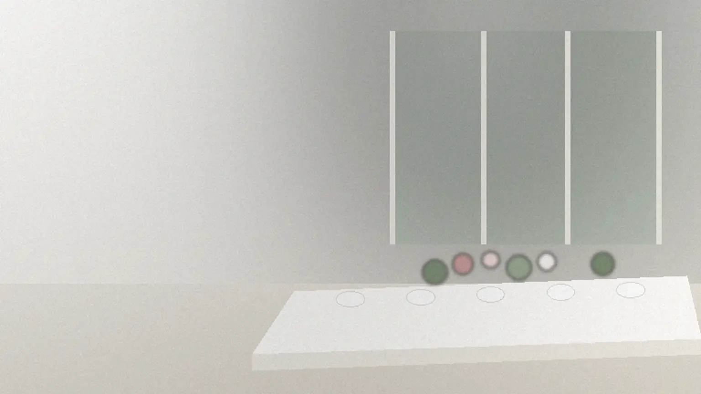
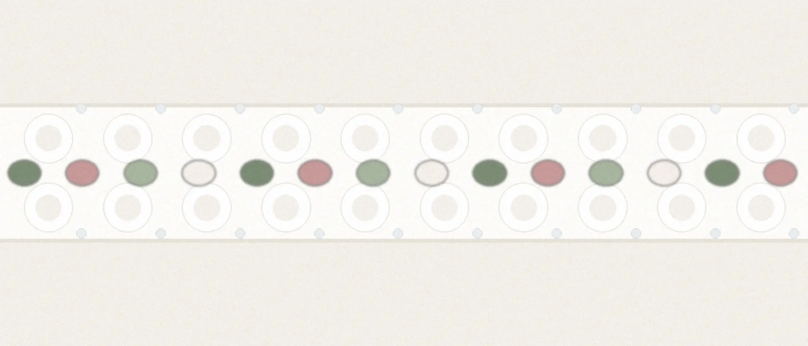
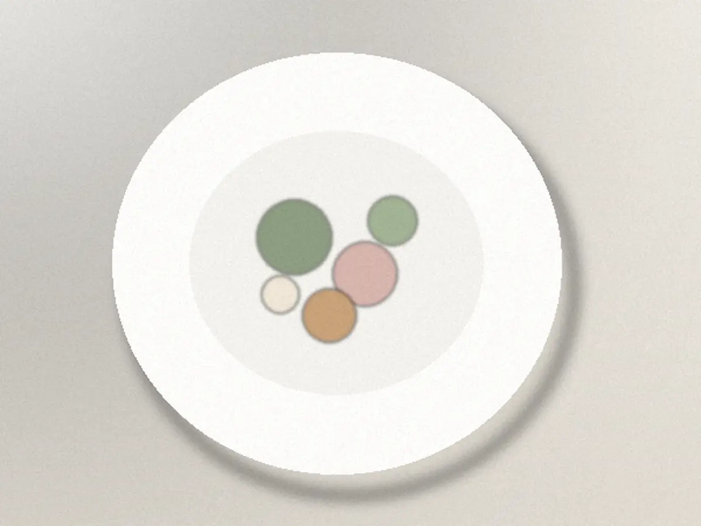
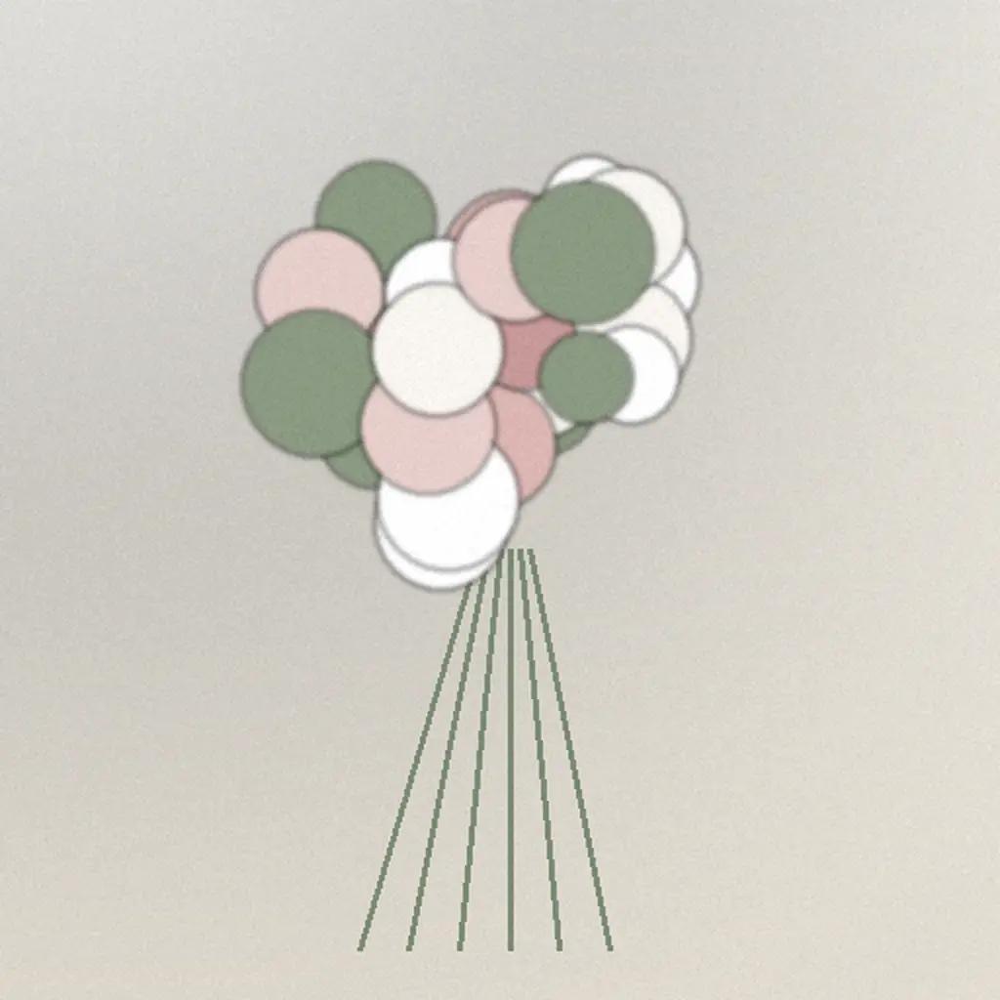
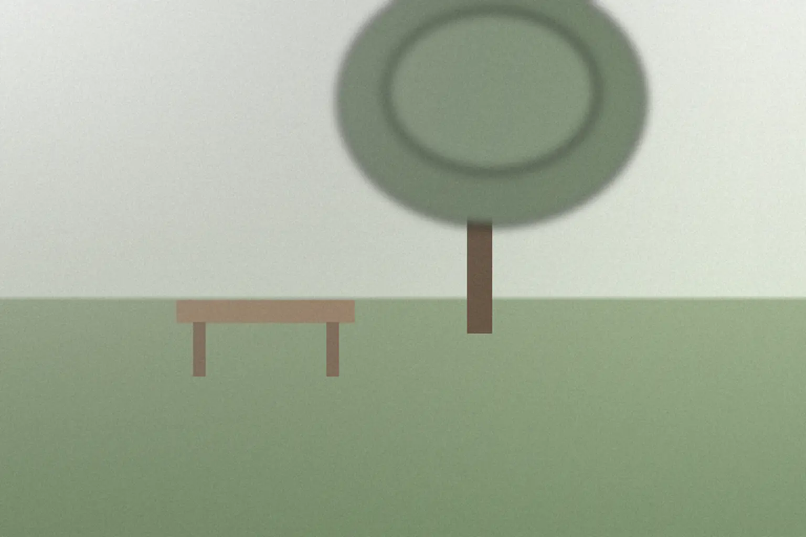

庭のある一軒家の結婚式場
二十人だから、
全員の顔が
見える。
二十人までの式と食事会を、
長いテーブルひとつで。

人数ごとの基本料金（税込）
- 10人まで440,000円
- 15人まで550,000円
- 20人まで660,000円
挙式から当日の進行までの6つを含む料金です。追加費用が出るのは、写真・延長・引出物・土日祝の午後。衣装は含みません。
見積もりの目安をつくる見学だけ、相談だけでも
高砂の席を置かず、
同じ卓で食べる式です。
二人も、家族も、友人も、長いテーブルひとつを囲みます。
乾杯からデザートまで、席を立たずに話せる距離です。


料理は季節で、
花は庭の色で。
料理
旬の野菜を主役にしたコースです。苦手なものやアレルギーは、一人ずつ伺います。
装花
白と緑に、淡い色をひとつ。卓の花は食事の邪魔にならない低さで、ブーケは式のあと持ち帰れます。

見学から、当日まで。

雨の日は室内に移ります。
約60分
見学
会場と庭を見て、日取りと人数を伺います。
1枚
お見積もり
基本料金と追加の有無を、1枚にまとめます。
3回まで
打ち合わせ
料理・花・進行を決めます。2回目からはオンラインでも。
30分＋2.5時間
当日
挙式と食事会。担当者が最初から最後まで付きます。
衣装と写真は提携先をご紹介します。持ち込みも追加料金なしでお受けしています。
R.S.V.P.
まずは、見学から。
決めていない段階のご相談も歓迎です。見学のあと、お見積もりをお渡しします。
- 返信の目安
- 2日以内（水曜は定休日）
- 見学の時間
- 10:00〜17:00
- お伝えいただくこと
- 希望の時期と人数